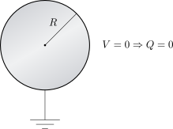
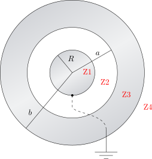

3.5 Conductores Conectados a Tierra#
El principio fundamental de un conductor conectado a Tierra es que su potencial eléctrico se vuelve igual al de referencia, es decir, cero: \(V=0\).
Esfera Conductora Aislada#
Si consideramos una única esfera conductora de radio \(R\) conectada a Tierra, la condición \(V=0\) implica analíticamente que su carga neta debe ser nula (\(Q=0\)). Todo el exceso de carga se neutraliza con la Tierra.
{kind=link}

Esferas Conductoras Concéntricas#
El escenario requiere una evaluación conceptual más profunda cuando interactúan múltiples conductores. Consideremos una esfera conductora central de radio \(R\) conectada a Tierra (\(V_R=0\) para \(0 \le r \le R\)). Esta esfera está rodeada por un cascarón esférico conductor de radio interior \(a\), radio exterior \(b\), y que posee una carga neta \(Q\).
{kind=link}

Para encontrar el estado electrostático de este sistema, evaluamos la diferencia de potencial entre el infinito y la superficie de la esfera interior (\(r=R\)):
Por lo tanto, la diferencia de potencial neta es cero:
Relacionamos esta diferencia de potencial con el campo eléctrico \(\vec{E}\) mediante la integral de línea:
El conflicto conceptual#
Para resolver la integral, dividimos el espacio en cuatro zonas:
Zona 4 (\(r > b\)): \(\vec{E}_4 = \frac{Q}{4\pi\epsilon_0 r^2}\hat{r}\) (asumiendo temporalmente que la esfera interna no tiene carga).
Zona 3 (\(a < r < b\)): \(\vec{E}_3 = \vec{0}\) (interior del material conductor del cascarón).
Zona 2 (\(R < r < a\)): \(\vec{E}_2 = \vec{0}\) (bajo la suposición de carga nula en el centro).
Zona 1 (\(0 \le r < R\)): \(\vec{E}_1 = \vec{0}\) (interior de la esfera central).
Si calculamos la integral por tramos con esta suposición:
Como \(\vec{E}_4 \neq \vec{0}\), el resultado de la integral no sería cero (\(\Delta V \neq 0\)). Esto es inconsistente con la condición de borde impuesta.
Análisis de la Carga Inducida#
Para resolver esta inconsistencia, debemos concluir que la esfera central sí tiene carga. La conexión a Tierra le permite adquirir una carga \(q\) para anular el potencial del sistema. Esto modifica la distribución en el espacio:
Nuevo Campo Zona 2: \(\vec{E}_2 = \frac{q}{4\pi\epsilon_0 r^2}\hat{r}\)
Nuevo Campo Zona 4: Para mantener \(\vec{E}_3 = \vec{0}\) dentro del cascarón conductor, se debe inducir una carga \(-q\) en su superficie interior (\(r=a\)). Por conservación, la superficie exterior (\(r=b\)) quedará con una carga total \(Q+q\). Por ende, \(\vec{E}_4 = \frac{Q+q}{4\pi\epsilon_0 r^2}\hat{r}\).
Volvemos a plantear la ecuación del potencial con los campos correctos:
Evaluando las integrales:
Despejando analíticamente la carga inducida \(q\), obtenemos:
Este resultado es fundamental: demuestra que estar conectado a Tierra no siempre significa tener carga cero; significa adoptar la carga exacta y necesaria para que el potencial se iguale a cero en presencia de otros campos eléctricos.